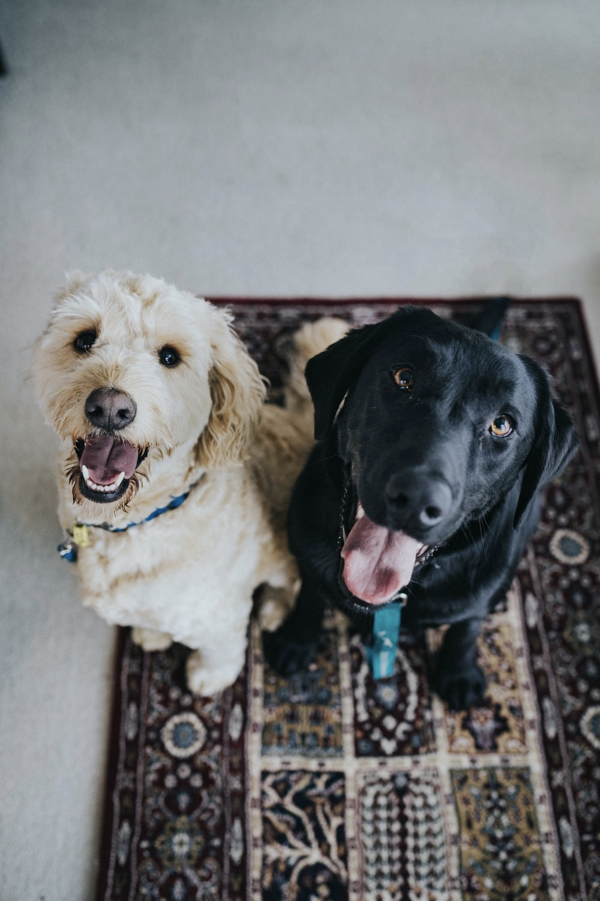

Dogs
The domestic dog is an extremely social animal and offers a diverse variety of choices as there are well over 300 breeds recognized by the World Canine Organization. Adopting a dog offers mutual benefits between dog and owner. Many studies cite the social benefits of having a companion as well as the reduced feelings of loneliness from adopting a dog. Studies even show medical indicators such as reduced blood pressure and improved lipid profiles. If you have a dog, it is important to make sure that you care for your dog; be mindful of what you feed your dog and provide enough opportunities for exercise. In this page, you will find more information about how to care for your pets throughout the various stages of their lives.
Diet & Exercise
Throughout dogs' lifespans, they should generally be fed fewer meals as they mature. Puppies should be nursed the first two months, then introduced to three meals per day when they are about three to six months years old. Their food intake should be reduced to two meals per day when they are six months to one year old and finally reduced to one meal after they reach one year old. And a dog's typical body mass is composed of somewhere between 60 and 70 percent water. The ASPCA says just a 10 percent decrease in body water can cause illness, and a 15 percent loss can cause death, so make sure you keep your pooch hydrated!Much like humans, dogs need to have a healthy level of activity to keep their organs healthy, as well as sun and fresh air. The minimum recommended time for exercise varies greatly with breed and size differences, but generally a range of 30 ‐ 120 minutes of exercise is recommended per day! Can you imagine exercising two hours per day? OK, I know that wouldn't bother some of you reading this. But the thought of it to me makes me cringe! And by the way, exercising your dog does not mean you are being challenged to a push-up contest. Brisk walks are OK too! You can also choose from a variety of toys to encourage physical activity; just be sure they are age appropriate and do not pose a choking hazard. Pay careful attention to toys that require supervision.